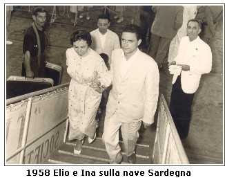
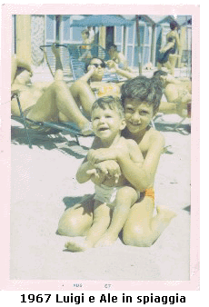

LUIGI E ALESSANDRO CANDELA
Luigi (1959) e Alessandro (1966) sono nati a Palermo in una famiglia che ebbe sempre passione per il mare.
Nei racconti dei nonni e delle zie che Luigi e Alessandro ascoltavano da piccoli c'erano parole e frasi come: i tre bastimenti a vela - rotta per le americhe -  s'imbarcò a 12 anni e tornò adulto - il nonno s'interessò al progetto di un sommergibile della Marina - quei bastimenti finirono nella Compagnia Florio per cui l'eco del respiro del mare era sempre presente nella loro vita quotidiana.
Quando iniziava la bella stagione, che a Palermo è molto lunga, con la mamma Ina si andava ogni giorno a fare i bagni a Mondello (rinomata zona balneare palermitana) o si prendeva in affitto una barca a remi dei pescatori.
Nei periodi più fortunati si affittava una casa con giardino vicino al mare dove si passavano tutti i weekend e,
 appena terminate le scuole, tutta l'estate.
Il papà Elio era grande nuotatore conosciuto in tutto il golfo, andava a pescare o veleggiava. La sua grande passione rimase la navigazione a vela. Ogni momento era buono per issare le vele della sua piccola barca di appena 4 metri e raggiungere il largo.
Il breve inverno era per la manutenzione della barca o per l'altra passione: cinema e fotografia.
Quando raggiunse l'età per andare in pensione si buttò a capofitto nella vela. Avvantaggiato da uno spirito e un fisico sportivo oltre ogni possibile immaginazione iniziò l'attività d'istruttore di vela.
Rimane nella memoria di molti velisti palermitani la sua gestione della Scuola Vela del Clubino del Mare a Mondello dove organizzò corsi con un notevole numero di allievi con pochissimi mezzi a disposizione.
|